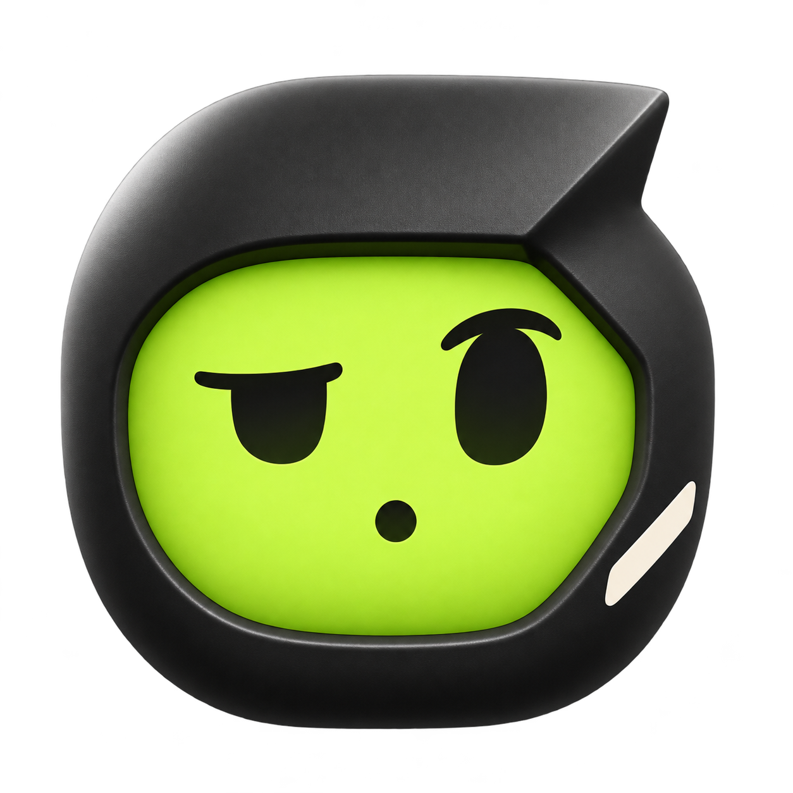

مساعد بالمصري للاعب والكابتن. بيرد من بيانات اللاعب الحقيقية، وبيعمل أكتر من حاجة في رسالة واحدة، وبيسمع الصوت ويشوف الصور. وكل حاجة بتغيّر بيانات لازم تتأكد بزرار.
KO مع اللاعب
بيكلم اللاعب كأنه مدرب جنبه: فاهم برنامجه وأكله وأرقامه، ومش بيرد رد محفوظ.
17:01KOCHIVO
KO
متاح
أنا تعبان النهارده ونمت 5 ساعات بس. أعمل إيه في تمرين الرجل؟ وسجّلي إني شربت 2 لتر ماية
طبيعي تحس كده بعد 5 ساعات نوم. آخر مرة في الرجل رفعت 100 كجم سكوات، فالنهارده خليها 85 كجم بنفس العدات، وشيل آخر مجموعة لو حسيت إنك تقيل.
نومك النهاردهآخر تمرين رجلبرنامج الكابتن
1. تخفيف تمرين النهارده 15%
نفّذلا
✓2. سجّلت 2 لتر مايةتراجع
تمام نفّذ
اتعدّل. الكابتن هيشوف إنك خففت النهارده بسبب النوم.
اكتب لـ KO...↑
ردّ طبيعي من أرقامه الحقيقية، وتحته المصادر اللي اعتمد عليها. طلبين في رسالة واحدة، وكل واحد له زرار.
17:01KOCHIVO
بنش بريس
المجموعة 2 من 4
سجّل بصوتك
«بنش 80 كيلو 8 عدات، كانت تقيلة»
الوزن80
العدات8
المجهود9/10
اتسجلت. ده أعلى وزن ليك في البنش بـ 8 عدات. المجموعة الجاية خليها 77.5 عشان تكمّل العدات.
تمامعدّل
بيشتغل من غير نت كمان، والتسجيل بيتبعت لما النت يرجع.
في نص التمرين، من غير ما يكتب: يقول الوزن والعدات بصوته، وKO يملا المجموعة ويقترح التالية.
17:01KOCHIVO

KO
بيشوف الصورة
فراخ بانيهرز أبيضسلطة
عزومة عند ماما. آكل قد إيه من ده؟
فاضلك النهارده 780 سعرة و55 جم بروتين. كُل كده:
فراخ بانيهقطعتين متوسطين~ 420
رزنص كوباية~ 200
سلطةبراحتك~ 60
يومك بعد الأكلة دي2,320 / 2,400
الأرقام تقريبية من الصورة. مش نصيحة طبية.
سجّلها في أكليمش هاكلها
أي أكلة حتى لو مش في القايمة: KO يشوفها، ويقوله ياكل قد إيه على حسب اللي فاضله من خطة الكابتن.
KO مع الكابتن
بيوفّر على الكابتن ساعات: بيقوله مين محتاج إيه النهارده، وبيقترح، والكابتن يوافق بضغطة.
قرارات ليك1. نبدأ بإننا نقيس KO الحالي على 100 رسالة بالمصري قبل أي تحسين؟ اقتراحي آه، عشان نعرف إن كل تحسين فرق فعلًا.2. ترتيب الشغل: الردود الطبيعية وكذا طلب في رسالة، وبعدها التسجيل بالصوت، وبعدها صورة الأكل، وبعدها أدوات الكابتن. موافق؟3. صورة الأكل: KO يدي أرقام تقريبية للسعرات والكميات (ده تغيير عن دلوقتي، KO ممنوع يقدّر)؟ اقتراحي آه، مع كلمة «تقريبية» دايمًا.